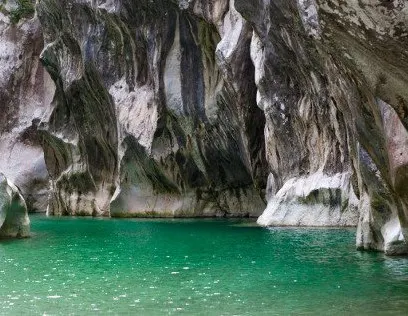
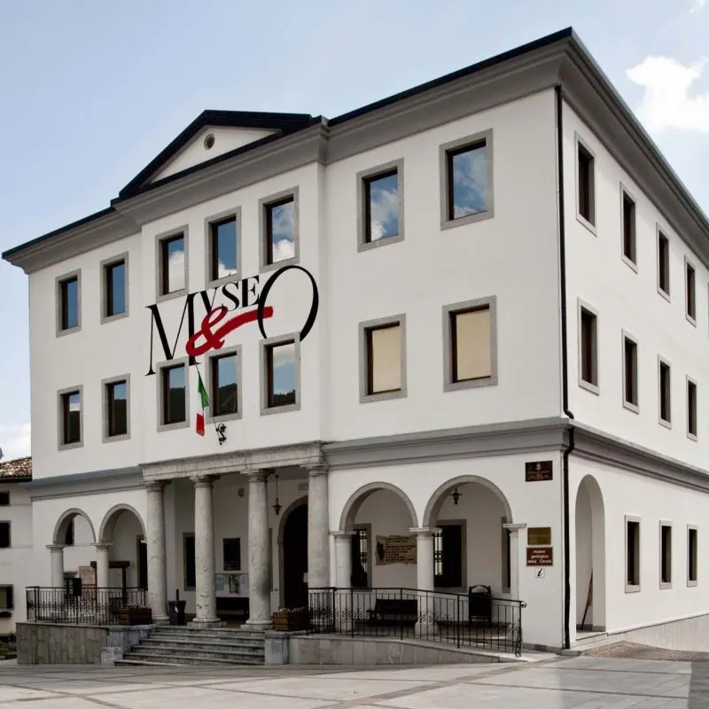
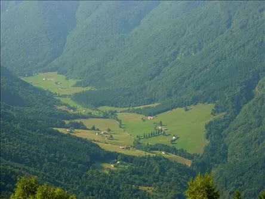
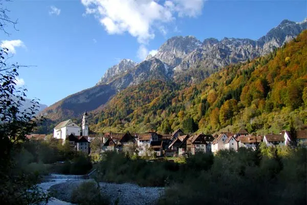

Carnia is an archipelago of small villages spread over four main valleys that open out from Tolmezzo (But, Chiarsò, Degano and Tagliamento) and four smaller ones (Valcalda, Lumiei, Pesarina and Pontaiba). A variety of landscapes and cultures that makes it a rich store of experiences for visitors.
To the north, about 18 km away, lies Sauris with its lake, the famous Wolf ham-maker, in business since 1862, the Zahre Beer brewery, its Carnival and the Ham Festival in July. Half an hour away are the Friulian Dolomites, a UNESCO World Heritage Site, and the Varmost slope at Forni di Sopra – for walking in summer and skiing in winter – with the Dolomiti Adventure Park and its rope bridges among the trees. To the south, after a stop at the Caseificio Val Tagliamento dairy, you reach Tolmezzo, the capital of Carnia, with the Carnic Museum of Folk Arts.
Carnia covers just 15.6% of Friuli Venezia Giulia, yet it is full of surprises and magical places where several dialects and minority languages are spoken: a land to discover and, in the end, to love.

Visit CarniaThe Lumiei gorge
A canyon where the stream plunges deep into the rock, creating spectacular views – a destination for experienced trekkers and canyoning fans. The trail, one of the most striking in Carnia, once linked Ampezzo with Sauris and can be walked thanks in part to a metal bridge suspended between water and stone.

Visit CarniaAmpezzo, Palazzo Unfer
4 km from Mediis, Ampezzo – proud of the history of the Free Republic of Carnia – houses the Geological Museum of Carnia in Palazzo Unfer: rocks and fossils from one of the few areas in Europe where the paleontological heritage has been preserved so completely, with displays designed for children too. The same building holds the gallery of Marco Davanzo (1872–1955), who painted Carnia in the crystal-clear light of the mountains.

Visit CarniaPreone and its valley
A few kilometres from Socchieve, Preone sits at the entrance of a valley that seems hidden from the world, quiet and untouched between two mountains. The village itself is worth a visit, and the trails and peaks around it, where many of the fossils on display in Ampezzo were found, complete the picture.

Visit CarniaVal Pesarina, the valley of time
Bordering Socchieve along the ridge of the Col Gentile, Val Pesarina is home to the clock museum in Pesariis and to the typical architecture of the Friulian mountains, such as the famous haylofts (stavoli) of Orias.